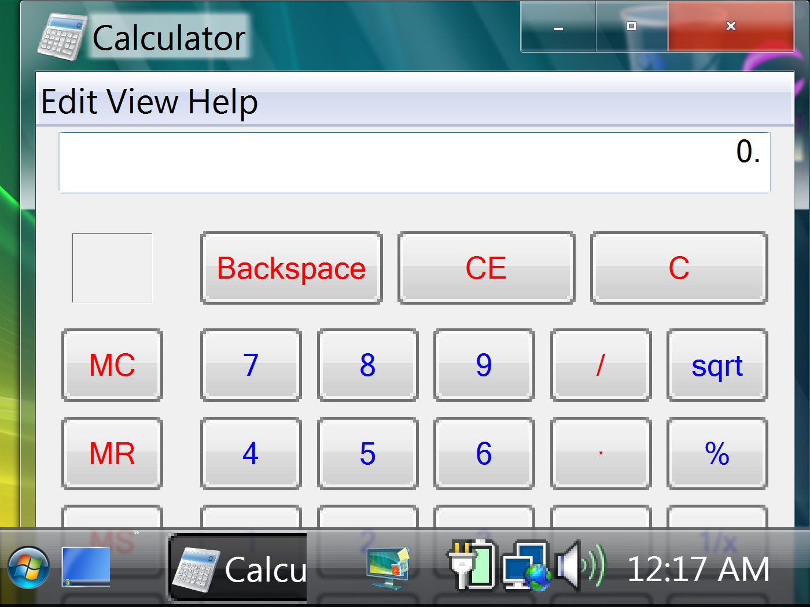
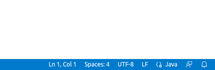

danilo.pianini@unibo.itroby.casadei@unibo.itLo slogan, coniato originariamente da Sun Microsystems per illustrare i benefici del linguaggio Java, vale a patto che:
Inserire dei path assoluti nel proprio sorgente è sempre fonte di problemi quando si scrive software multipiattaforma:
C:\Users\UserName\file — Non funzionerà su piattaforma *nix, e non funzionerà se l’utente Windows non è “UserName”.C:\MyProgram\file — Non funzionerà su piattaforma *nix, e non funzionerà se
l’installazione di Windows è sana e il software non è avviato con diritti di amministratore./home/username/file — Non funzionerà su piattaforma Windows, e non funzionerà se l’utente non è username.Java fornisce nella classe System un metodo
String getProperty(String p)
che consente di accedere a proprietà di sistema
file.separator — Restituisce \ per Windows e / per Unixjava.home — La directory di installazione di Javauser.dir — La directory da cui il comando java è stato invocatouser.home — Restituisce la home directory dell’utente che ha lanciato javauser.name — Restituisce il nome utentepublic static final String PROP_FILE_SEPARATOR = "file.separator";
String separator = System.getProperty(PROP_FILE_SEPARATOR);
java.version — La versione di java in uso. Si potrebbe decidere di non usare una funzionalità che si sa non esistere o essere buggata.os.arch — L’architettura della CPU come rilevata dall’OS (x86, i386, amd64, x86_64, IA64N, ARM, …)os.name — Il nome del sistema operativo (Linux, MacOS X, MacOS, Windows 10, Solaris, FreeBSD, …)os.version — Restituisce per Windows il numero di versione effettivo (per esempio, Windows 10 restituisce 10.0), per MacOS il numero di versione (per esempio, 10.3.4), per Linux la versione
del kernel (es. 6.1)Diversamente dagli anni 90, i dispositivi oggi hanno una densità di pixel per area estremamente variabile. Si va da 120 PPI (Pixel Per Inch) a 640 PPI, su schermi di dimensione estremamente variabile (da 3 a 200 pollici).
Piattaforme diverse, anche a parità di schermo, possono adottare diverse convenzioni:
Questi elementi sono stabiliti dal window manager (del windowing system del sistema utilizzato) e non dallo sviluppatore dell’applicazione. Come indicazione generale vale che un’applicazione ben sviluppata eredita il “look and feel” dal sistema su cui sta girando.

Sarebbe opportuno definire la UI una sola volta e cambiare dinamicamente le parti scritte (il testo) a seconda dell’impostazione della lingua di sistema (o della nostra applicazione).
In realtà anche per il formato dei numeri, la valuta, le convenzioni sulla data, …
en_US_UNIX (lingua inglese, Stati Uniti, piattaforma UNIX)Java fornisce una architettura per l’internazionalizzazione (i18n = internationalization), che fa uso di ResourceBundle e di una serie di file di supporto (properties files).
Per approfondimenti (per implementare il supporto multilingua):
├── src
│ ├── main
│ │ ├── java
│ │ └── resources
│ └── test
│ ├── java
│ └── resources
├── build.gradle.kts
└── settings.gradle.kts
src/[main|test]/resources contengono le risorse del progetto opportunamente organizzate
Per OOP, alla struttura del progetto Gradle andranno aggiunti almeno altri due file
├── src
│ ├── main
│ │ ├── java
│ │ └── resources
│ └── test
│ ├── java
│ └── resources
├── build.gradle.kts
├── LICENSE
├── README.md
└── settings.gradle.kts
README.mdLICENSELe più note piattaforme utilizzano di default encoding diversi:
Solitamente, il codice sorgente si sviluppa utilizzando la codifica UTF-8
File -> Preferences -> Settings
Per l’opzione Text Editor -> Files -> Encoding selezionare UTF-8
Per l’opzione Test Editor -> Files -> Eol selezionare LF
In basso a destra nella finestra di VS Code c’è l’indicazione della codifica e di EOL per il file selezionato

Abbiamo visto finora il classpath come l’insieme dei percorsi dove la virtual machine va a cercare le classi da caricare
-cp di java e javac, il classpath può contenere indifferentemente dei path o dei JAR (o anche degli zip)Esso includerà tipicamente anche le risorse del progetto, i JAR delle dipendenze importate, etc.
Come possiamo accedere a queste risorse in modo uniforme?
Java fornisce un’utilità per caricare risorse dal classpath
ClassLoader.getSystemResource(AsStream)(String)public abstract class ClassLoader {
public static ClassLoader getSystemClassLoader();
public static URL getSystemResource(String name);
public static InputStream getSystemResourceAsStream(String name);
public URL getResource(String name);
// ...
ClassLoader) è un’oggetto responsabile del caricamento di classi e risorse
CLASSPATHgetSystemResource e getSystemResourceAsStream è il nome di una risorsa (non un percorso del filesystem!), che è una stringa separata da / che identifica la risorsa
ClassLoader.getSystemResource() equivale a ClassLoader.getSystemClassLoader().getResource()final InputStream in = ClassLoader.getSystemResourceAsStream("/settings/settings");
final BufferedReader br = new BufferedReader(new InputStreamReader(in));
final String line = br.readLine();
in.close();
final URL imgURL = ClassLoader.getSystemResource("/images/gandalf.jpg");
final ImageIcon icon = new ImageIcon(imgURL);
final JLabel lab1 = new JLabel(icon);
Spesso un software ha necessità di caricare al primo avvio delle impostazioni di default, quindi lasciare l’utente libero di modificarle e, se avviato successivamente caricare quelle scelte dall’utente. In caso di sistema multiutente, le impostazioni saranno diverse per ciascuno.
.nomeprogramma.getResource().Google Guava (https://github.com/google/guava)
Apache Commons (https://commons.apache.org)
Static Logger Facade for Java (SLF4J) (http://www.slf4j.org)
println)Esiste una lista, costantemente manutenuta, che elenca le più comuni, diffuse e stabili librerie per una pletora di usi: https://bit.ly/awesome-java
Alcune librerie sono costruite come Framework, ossia come ossature di applicazioni, pensate per velocizzare la costruzione di un certo tipo di software
Uno degli scopi del progetto di OOP è quello di misurare se siate bravi designer, ma per farlo è necessario che il design della vostra applicazione l’abbiate fatto voi e non chi ha costruito il framework.
Vi raccomandiamo quindi di evitare i framework! O, al più, usarli solo dopo che il progetto è avviato come semplice libreria (non semplice e non sempre possibile)
Costituisce una delle più ampie collezioni di librerie e componenti Java open-source.
Rappresenta uno dei modi più rapidi per accedere a librerie sviluppate da altri sviluppatori e distribuire le proprie.
Consente di ricercare e scaricare pressoché qualunque libreria a supporto utile nelle proprie applicazioni open-source.
https://search.maven.org/